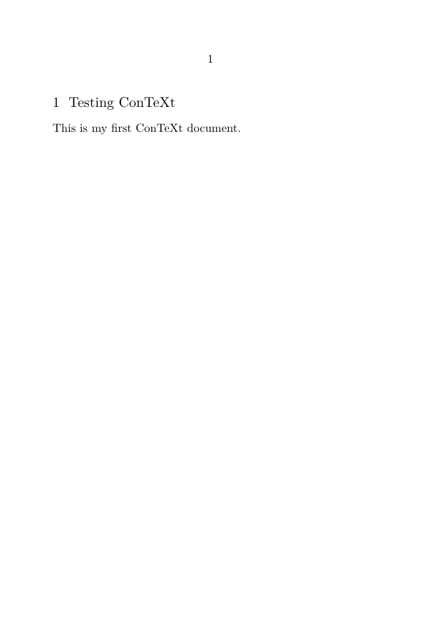

Contents
Download
You can read the licence (Creative Commons GNU GPL for program code, and Creative Commons Attribution ShareAlike for documentation).
Installation
The general steps to install ConTeXt LMTX are as follows:
- Create a directory for ConTeXt.
- Download the platform-specific archive file into the ConTeXt directory.
- Unpack the archive.
- Execute the install program, which downloads the distribution.
- Update the PATH environment variable.
- Generate cache
- Optionally, delete the archive file.
See the next sections for instructions specific to various platforms.
GNU/Linux
The steps in this section show how to download and install ConTeXt for a 64-bit Linux system. Change the archive file download link as needed for your target platform. Open a new terminal then run the following commands:
-
mkdir $HOME/contextandcd $HOME/context -
wget https://lmtx.pragma-ade.com/install-lmtx/context-linux-64.zip -
unzip context-linux-64.zip -
sh install.sh -
Update the PATH environment variable by using the path instructions displayed when the install program finishes. The instructions will vary depending on the type of shell being used:
-
Bash:
echo 'export PATH=...instructions...:$PATH' >> ~/.bashrc -
Zsh:
echo 'export PATH=...instructions...:$PATH' >> ~/.zshenv -
Sh/Ksh:
echo 'export PATH=...instructions...:$PATH' >> ~/.profile -
Tcsh/csh:
echo 'set path = ($path ...instructions...)' >> ~/.cshrc -
For example, if ConTeXt was downloaded into
$HOME/contexton a system running bash, then the following line would update the PATH environment variable:echo 'export PATH=$HOME/context/tex/texmf-linux-64/bin:$PATH' >> ~/.bashrc
-
Bash:
-
Then generate the cache with
mtxrun --generate. -
rm context-linux-64.zip
macOS
The instructions for MacOS are the same as for Unix, but note that:
- You need to download https://lmtx.pragma-ade.com/install-lmtx/context-osx-64.zip
- MacOS versions from Catalina (10.15) and newer use Zsh by default.
- MacOS versions before Catalina use Bash by default.
-
You might need to de-quarantine the binaries (and sometimes every created PDF):
-
sudo xattr -r -d com.apple.quarantine bin/mtxrun -
sudo xattr -r -d com.apple.quarantine tex/texmf-osx-64/bin/*
-
Windows
Complete the following steps to set up ConTeXt on Windows:
-
Create a directory for ConTeXt, such as
C:\context. - Download the architecture-specific version into the ConTeXt directory.
- Extract the archive.
-
Run:
install.bat -
Run:
setpath.bat -
Then generate the cache with the command
mtxrun --generatein a command prompt. - Delete the file archive file context-*win*.zip.
TeX Live
If you prefer, you can install ConTeXt via TeX Live. ConTeXt is included in the default “full” installation of TeX Live, so most TeX Live users will already have ConTeXt installed. If you wish to install only ConTeXt (and not LaTeX) with all available modules, you can run the following commands on Linux/macOS/*BSD:
$ cd $(mktemp -d) $ curl -LO https://mirror.ctan.org/systems/texlive/tlnet/install-tl-unx.tar.gz $ tar xf install-tl-unx.tar.gz $ ./install-tl-*/install-tl --scheme=context $ export PATH="/path/to/texlive/202X/bin/platform/:$PATH" $ tlmgr repository add https://mirror.ctan.org/systems/texlive/tlcontrib tlcontrib $ tlmgr pinning add tlcontrib "*" $ tlmgr install context-nonfree $ rm -r $(pwd)
For Windows, follow the upstream instructions, and before clicking “Install”, open the advanced settings and select the “ConTeXt” installation scheme.
To update ConTeXt and all installed modules, simply run
$ tlmgr update --all --self
Check the installation
Make sure that ConTeXt is installed on your system. To check that, go to the command prompt and type
context --version
You should get an output as follows:
mtx-context | ConTeXt Process Management 1.06 mtx-context | mtx-context | main context file: /home/myuser/context/tex/texmf-context/tex/context/base/mkiv/context.mkiv mtx-context | current version: 2024.04.01 08:59 mtx-context | main context file: /home/myuser/context/tex/texmf-context/tex/context/base/mkxl/context.mkxl mtx-context | current version: 2024.04.01 08:59
Upgrade
Re-run the install program to upgrade, which will update the distribution incrementally:
-
Windows:
install.bat -
GNU/Linux or macOS:
sh install.sh
First document
Creation of a first ConTeXt file
Open a text editor, type the following content, and save the file as doc01.tex:
\setuppapersize[A6] \starttext \startsection[title={Testing ConTeXt}] This is my first ConTeXt document. \stopsection \stoptext
Compilation of the ConTeXt file to PDF file
Go to the command-line and type:
context doc01
ConTeXt will then process your document, display some logging information on the console, and generate a doc01.pdf output file.
resolvers | formats | executing runner 'run luametatex format': /home/myuser/context/tex/texmf-linux-64/bin/luametatex --jobname="./doc01.tex" --socket --shell-escape --fmt=/home/myuser/context/tex/texmf-cache/luametatex-cache/context/5fe67e0bfe781ce0dde776fb1556f32e/formats/luametatex/cont-en.fmt --lua=/home/myuser/context/tex/texmf-cache/luametatex-cache/context/5fe67e0bfe781ce0dde776fb1556f32e/formats/luametatex/cont-en.lui --c:currentrun=1 --c:fulljobname="./doc01.tex" --c:input="./doc01.tex" --c:kindofrun=1 --c:maxnofruns=9 --c:texmfbinpath="/home/myuser/context/tex/texmf-linux-64/bin" system > system > ConTeXt ver: 2024.04.01 08:59 LMTX fmt: 2024.4.13 int: english/english system > … mkiv lua stats > used engine: luametatex version: 2.11.02, functionality level: 20240311, format id: 700, compiler: gcc mkiv lua stats > tex properties: 807100 hash slots used of 2097152, 51019 control sequences, approximate memory usage: 42 MB mkiv lua stats > lua properties: engine: lua 5.5, used memory: 57 MB, ctx: 54 MB, max: 54 MB, symbol mask: utf (τεχ) mkiv lua stats > runtime: 0.617 seconds, 1 processed pages, 1 shipped pages, 1.620 pages/second system | total runtime: 1.989 seconds of 2.052 seconds
Viewing the generated PDF file
Open the generated doc01.pdf PDF file using a PDF viewer. It should look as follows:
-
\setuppapersize[A6] \starttext \startsection[title={Testing ConTeXt}] This is my first ConTeXt document. \stopsection \stoptext
- 
Note that the section has been numbered, the section number and the section title appear in a slightly larger fonts.
Your installation is now up and running: you can start the first tutorial Writing in ConTeXt, to get started with input files and compilation.
Additional instructions
- Installing ConTeXt LMTX on MacOS
- Installing ConTeXt LMTX into a Docker container
- Manual Compilation
- Installing Modules for ConTeXt LMTX
- The official page Installing ConTeXt LMTX is hosted by Pragma ADE.
- Pragma ADE also provides the ConTeXt MkIV distribution (version MkIV is the predecessor of LMTX) for which there are also detailed installation instructions .
-
Compilation with ConTeXt MkIV (old LuaTeX-based version): The new distribution has all the files to run the previous version of ConTeXt.
-
context --luatex doc01
-
- Installing TikZ and pgfplots
- Building LuaMetaTeX for TeX Live